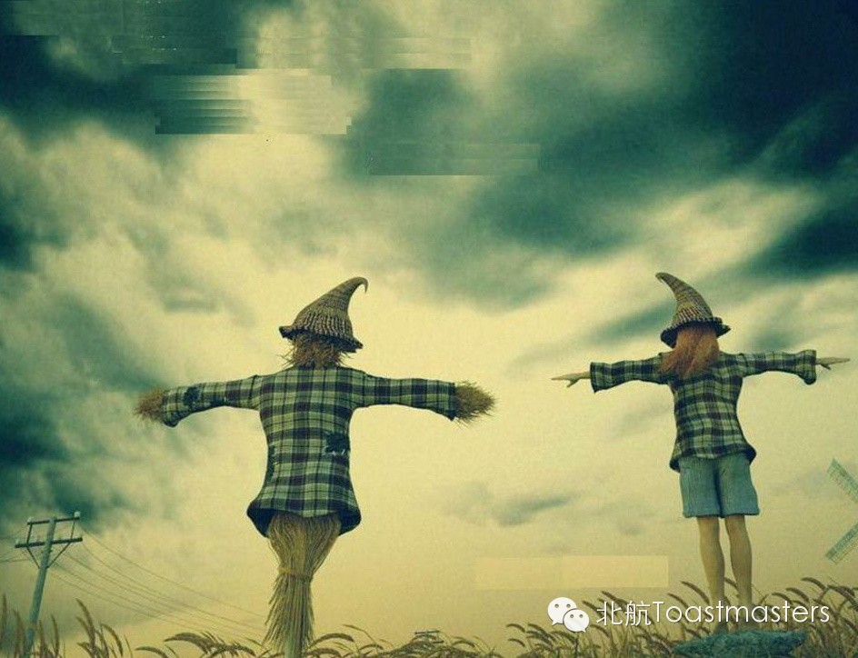
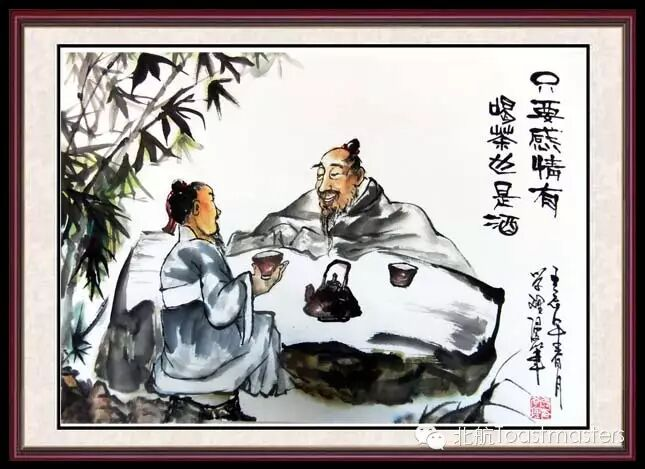

Welcome Letter for 94th Beihang Toastmasters Club Meeting

Unwilling Choices
Time: 19:30-21:30, Friday, May. 8
Venue: Room B208, New Main Building, Beihang University

Toastmaster: Joy
Table Topic Master: Jane
Table topic section
Once you are in the complex world, you can't control anything. This is a classical quote to describe the involuntary situation of ancient chivalrous men. However, today, this sentence can be applied to each human being. Because we have different social roles and different aspiration as we grow older, we often have to do things we really don't want to while unable to do what we want. We are pushed to a unwilling choice, and may feel annoyed and upset.
Do you need to release your unpleasant experiences about this situation? Do you want to seek for advice to reduce negative feeling when your face this case next time? Come to this week's meeting and you may find answer.
Prepared speech section
1. The Hedge between Keeps Friendship Green
cc4 Jill
Friendship is one of the most beautiful emotions in the world.We are eager to have friends and have tried to make friends with many people.Finally, only some become real friends, while some others become strangers, oreven opponents. How to make sure whether someone is your real friend?How to keepfriendship sincere? Let's look forward to Jill's particular understanding!

2.Tips on How to be a Successful Communicator
cc6 Lucia
Asthe saying goes "Kind words bring one warm for three winters, and tauntingmakes one feel cold in June."
Communication is an important part in survival philosophy. We speak a loteveryday but not always communicate well. To help with communicationskills, Lucia is going to distribute some welfare again. Please open your pocket and take it!
3.Keep Running
cc1 Emily
"There are clubs you can't belong to, neighborhoods you can'tlive in, schools you can't get into, but the roads are always open.” from Nike.
Running is an easy thing, while keeping running is much more difficult. Onlywhen you have a personal experience in which running benefits you a lot, canyou commit to it. What are those benefits? Emily will share her personal story with us!
时间：每周五晚7：30-9：30
地点：北航新主楼B座208
联系人： Keven 15810539853
Map

Who are we?
According to Wikipedia, Toastmasters International (TI) is a nonprofiteducational organization that operates clubs worldwide for the purpose of helping members improve theircommunication, public speaking, and leadership skills.
See you in the meeting!
https://mp.weixin.qq.com/s/Zww4yrdKCdpXx75kvQsxiA
本页为抢救式本地归档，图文已永久保存。